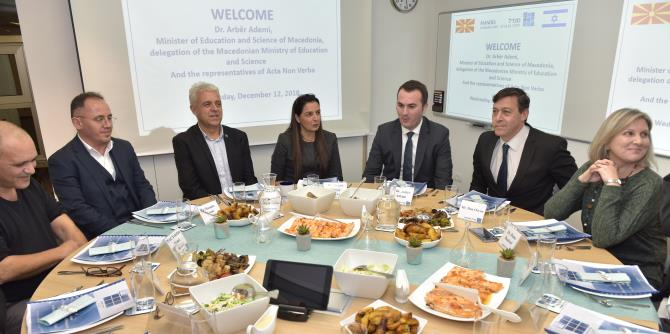

שר החינוך המקדוני
ארבר אדמי, השגריר (נייד) של ישראל למקדוניה
דן אוריין וחברי המשלחת המקדונית הגיעו ליחידת הבוגרים כדי לשמוע מבוגרי מנדל על עשייתם בתחומי החינוך והחברה ועל תהליך ההכשרה של בית ספר מנדל למנהיגות חינוכית. המשלחת כללה את ממלא מקום השגריר המקדוני בישראל, ונציגים של ארגון Acta Non-Verba, הפועל לחיזוק השותפות בין הקבוצות האתניות השונות במקדוניה באמצעות חינוך, עם דגש מיוחד על זיכרון השואה.

במפגש השתתפו כמה מבוגרי מנדל:
פרופ' יוני מזרחי, בוגר מחזור א' וראש החוג לסוציולוגיה ואנתרופולוגיה במכללה האקדמית עמק יזרעאל;
גיא לוי, בוגר מחזור ב' ומנהל החדשנות הפדגוגית במט"ח, המרכז לטכנולוגיה חינוכית; וד"ר דיאנא דעבול, בוגרת מחזור כ"ד, מנהלת מרכז אלפרח לתמיכה בתלמידים ליקויי למידה בבתי ספר פרטיים בירושלים המזרחית ומרצה במכללה האקדמית לחינוך דוד ילין. הבוגרים שיתפו את האורחים בהיבטים של עשייתם, סיפרו על תרומתו של תהליך ההכשרה שלהם בבית ספר מנדל למנהיגות חינוכית ועל שותפותם עם יחידת הבוגרים כבית מקצועי המלווה את עשייתם ומסייע להם במימוש חזונם לשיפור פני החינוך והחברה בישראל.
את הערב הובילה
ד"ר גרניט אלמוג-ברקת, מנהלת יחידת בוגרי מנדל ובוגרת מחזור י"ד בבית ספר מנדל למנהיגות חינוכית, שהציגה את חזון היחידה ואת הרציונל שלה.
דני בר-גיורא, מנהל בית ספר מנדל למנהיגות חינוכית ובוגר מחזור ד', הציג את בית הספר ואת תוכנית ההכשרה שלו.
שרונה בר-נס, חברת צוות בכירה ביחידת הבוגרים ובוגרת מחזור ט"ז, סיפרה על החוויה שלה הן כעמיתה בבית הספר והן כחברת צוות שמלווה את הבוגרים לאורך התפתחותם המקצועית.
איילה בבלי, חברת צוות היחידה, סיפרה על מודל השותפות של היחידה עם בוגרי מנדל.
{kind=link}